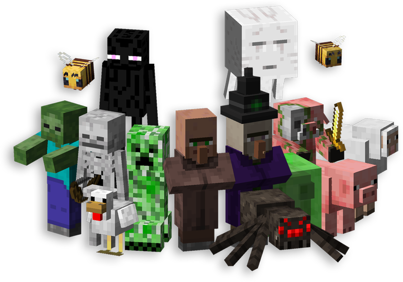

Mobs are creatures in Minecraft that can be hostile or passive. They add challenge to the game.
Mobs are living creatures in Minecraft that can interact with the player.
Mobs can be categorized into three main types: passive, neutral, and hostile.
Passive mobs are generally friendly and won't attack the player unless angry.
Neutral mobs are usually peaceful but will attack if the player gets too close
or attacks them first. Hostile mobs are aggressive and will attack the player
on sight. Understanding mobs helps players survive and gather useful resources.

Examples of hostile, neutral, and passive mobs.
Read more about Minecraft mobs here: Minecraft Mob Guide